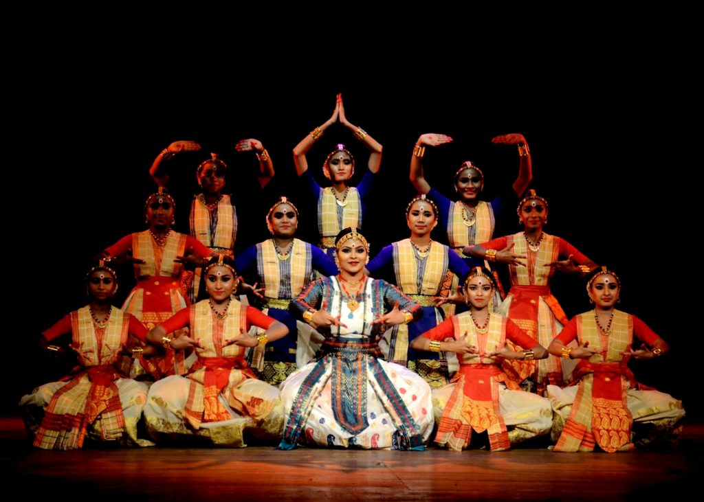

SattriyaThe Dance of Assam |
|  |
About Sattriya:Sattriya is a classical dance form that originated in Assam, India, and is performed in devotion to Lord Krishna. It is marked by graceful movements, storytelling through hand gestures (mudras), and religious themes, making it a form of Bhakti dance. |